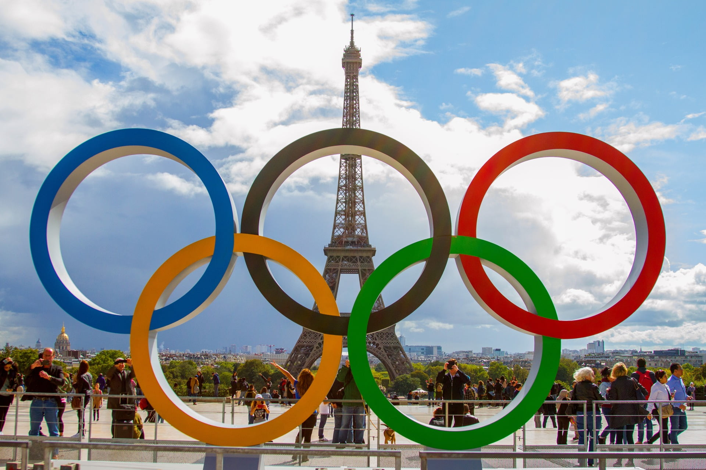
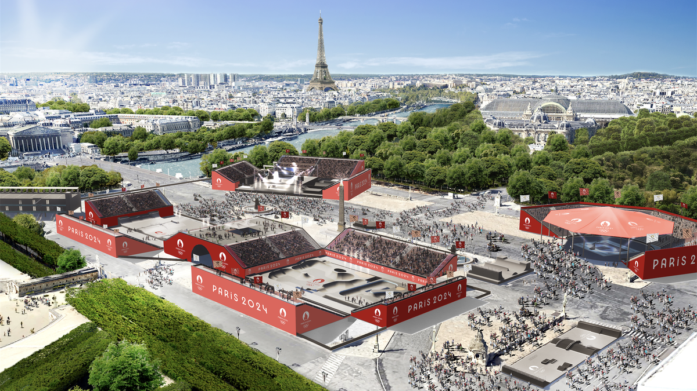

Les Jeux olympiques (JO), aussi appelés Jeux olympiques modernes, puisqu'ils prolongent la tradition des jeux olympiques de la Grèce antique, sont des événements sportifs internationaux majeurs, regroupant les sports d’été ou d’hiver, auxquels des milliers d’athlètes participent à travers différentes compétitions tous les quatre ans, pour chaque olympiade moderne. Originellement tenus dans le centre religieux d’Olympie, dans la Grèce antique du viiie siècle av. J.-C. au ive siècle apr. J.-C., les Jeux sont rénovés par le baron français Pierre de Coubertin en 1894 lorsqu’il fonde le Comité international olympique (CIO). Depuis lors, le CIO est devenu l’organisation gouvernant le mouvement olympique dont la structure et les décisions sont définies par la Charte olympique.
Si le passage de l’amateurisme pur au professionnalisme est dans les faits progressif, le XIe Congrès olympique en 1981 marque une révolution pour l'olympisme, avec l'admission des sportifs officiellement professionnels. Une autre évolution importante concerne la féminisation des épreuves, d'aucune femme en compétition en 1896 et un fort déséquilibre par la suite, jusqu'à la parité parfaite aux jeux de Paris 2024. Le CIO adapte aussi les Jeux aux changements sociaux qui se produisent au xxe siècle. Certains de ces ajustements incluent l'instauration des Jeux olympiques d’hiver, des Jeux paralympiques ou encore des Jeux olympiques de la jeunesse et la création de nombreuses épreuves mixtes. En outre, l’importante croissance des médias de masse apporte aux Jeux des sources de financement considérables, entraînant parfois des problèmes de corruption.
Actuellement, le mouvement olympique comprend les fédérations sportives internationales, les comités nationaux olympiques et la mise sur pied de comités d'organisation locaux pour chaque édition des Jeux olympiques. La ville hôte est chargée d’organiser les Jeux olympiques de manière qu’ils soient en accord avec la Charte olympique. Le CIO décide aussi des sports présents ou non à chaque édition. La célébration des Jeux inclut de nombreux rituels et des symboles, comme le drapeau olympique et la flamme olympique, le relais de la flamme, ainsi que les cérémonies d’ouverture et de clôture.
Les premiers Jeux olympiques modernes se déroulent en 1896 à Athènes, et l'instauration des Jeux olympiques d'hiver date de 1924 à Chamonix. Ils ont lieu la même année tous les quatre ans, souvent dans le même pays sous réserve qu'il possède un territoire montagneux, puis sont décalés de deux ans à partir de 1994. Annulés en 1916, 1940 et 1944 pour cause de guerres mondiales, les Jeux ont vu leur édition de 2020 reportée d'un an en raison de la pandémie de Covid-19. Pendant le xxe siècle, le CIO adapte les Jeux à sa perception des changements économiques, politiques et techniques du monde. Ainsi, les Jeux olympiques sont, comme le voulait Pierre de Coubertin, d'abord réservés aux purs amateurs, le règlement du CIO interdisant la participation de sportifs professionnels. Bien que malmenée par les supercheries (notamment l'amateurisme marron) autour du statut faussement « amateur » de nombreux sportifs, l'exclusion du professionnalisme reste en vigueur jusqu'en 1981.
Les trois meilleurs athlètes ou équipes de chaque compétition reçoivent respectivement une médaille d’or (1re place), d’argent (2e place) et de bronze (3e place). Pour les Jeux d'été, la participation est plafonnée à environ 10 500 athlètes et à 28 sports se déclinant en plus de 300 épreuves. Les Jeux olympiques sont devenus si importants que presque chaque nation est représentée. Une telle ampleur a causé de nombreux défis, comme le boycott, le dopage, la corruption et le terrorisme. Tous les deux ans, les Jeux et leur exposition médiatique permettent à des athlètes d'acquérir une notoriété nationale, voire mondiale dans certains cas. Les Jeux sont aussi une excellente occasion pour la ville hôte et le pays d'accueil d'assurer leur promotion sur la scène internationale.
©2024 CIR 1 Rennes | All Rights Reserved